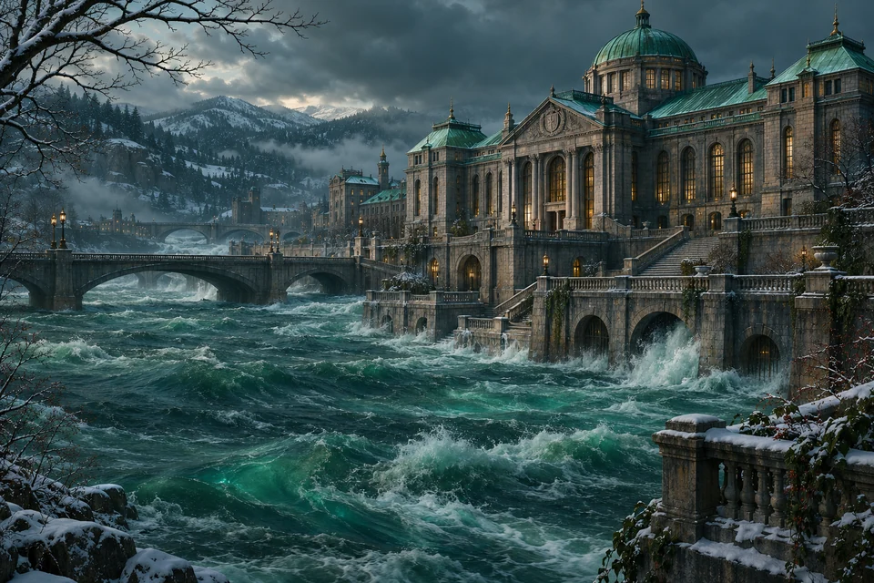
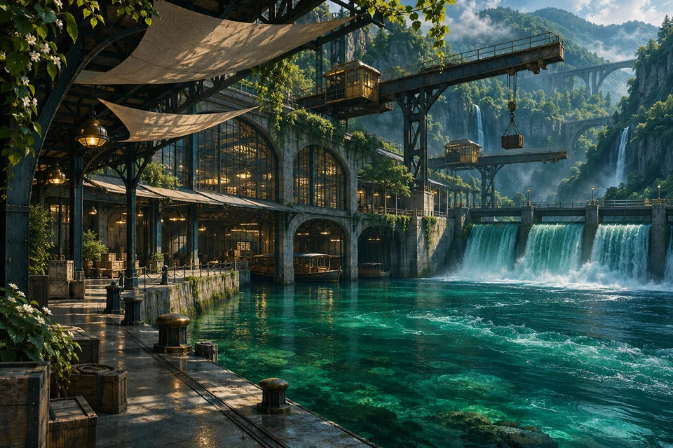
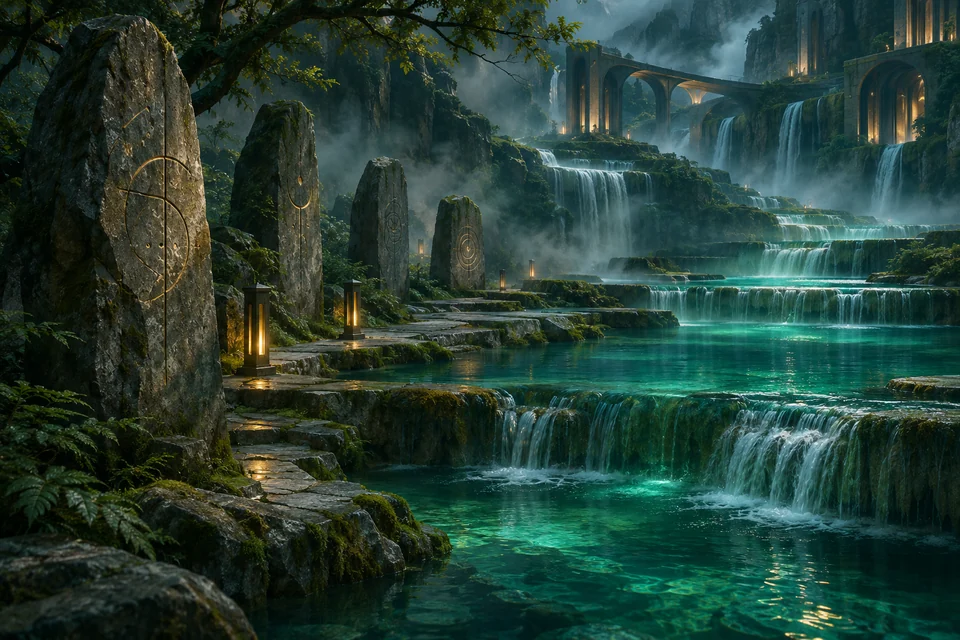
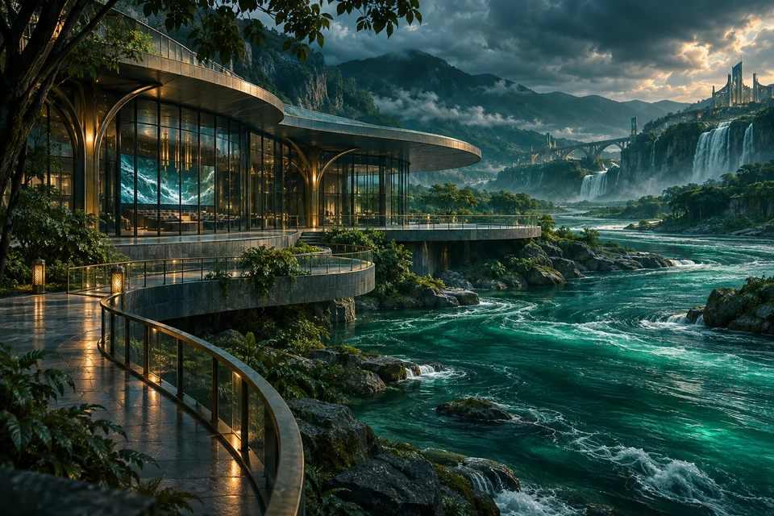

CA
County AbaronyRESTRESA SYSTEM FLOOD · CATEGO 21345678923456789

MIDGUADR REALM NETWORK
Find and follow Midguadr Realm institutes, explore their systems, and browse the Restresa System Flood stream.
Explore institutes
BR
SS
BV NF
NFNo institutes match. Try a different search or filter.
Original illustrations from across the Midguadr Realm directory.